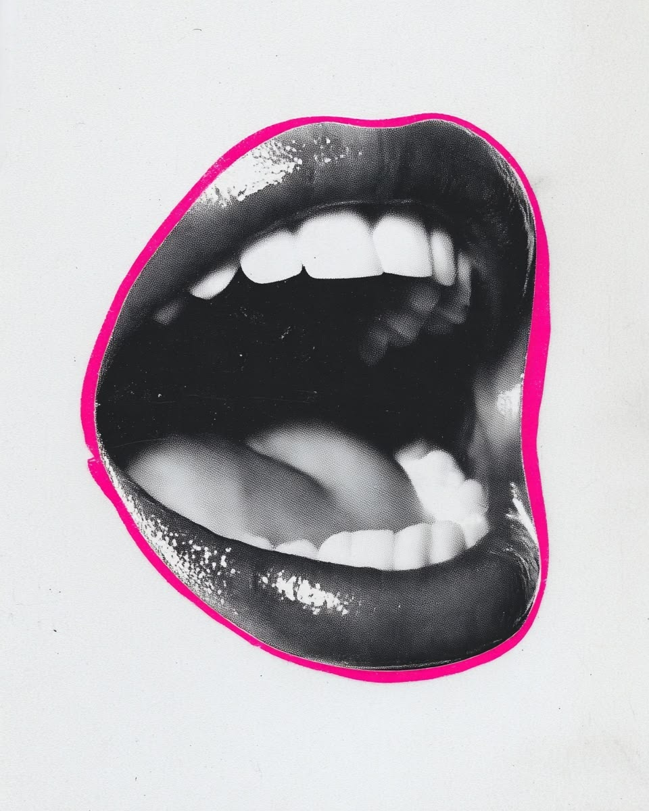

La conversación incómoda
Elige una postura provisional y mira qué argumentos ilumina. Puedes cambiar de opinión cuando escuches otra perspectiva.
NO HAY VOTO · NO GUARDAMOS RESPUESTAS
DILEMA 01 / 03elige con un toque
¿Cuándo el autocuidado se convierte en presión estética?
La barra ilustra una perspectiva, no representa votos ni datos de otras personas.
Disentir no autoriza a humillar. Una conversación crítica también necesita cuidado.Pacto de esta sala